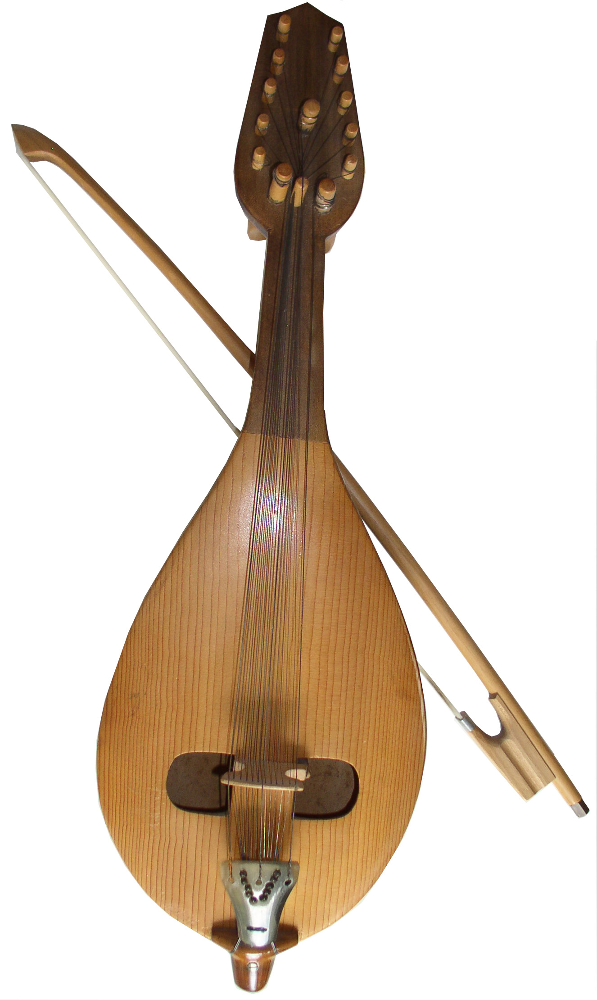

Gadulka
A stringed instrument with characteristic folklore melodies.
▶ Слушай в YouTubePress the button and immerse yourself in the sound of Bulgarian folk music.

A stringed instrument with characteristic folklore melodies.
▶ Слушай в YouTube